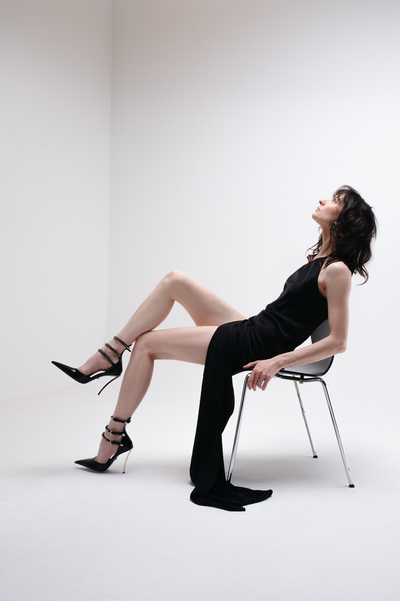

Rosa Damask emerged from Berlin's electronic underground with Adore You (Downwards Records). On record, Rosa Damask moves with restless intelligence and cavernous low-end weight, delivered with a distinctly modern sense of emotional dislocation. There is a seductive way Rosa Damask constructs tension. She favors negative space, letting tracks coil tighter instead of explode. Live, the sound is even more massive, sensual and charged. Risk being added to the arrangement.
A performance filmed at Morphine Raum and shared organically online captured that electricity, climbing to half a million views within a few weeks. Her reach has since drifted into unlikely territory. The track Bored surfaced in the Versace FW25 runway show in Milan, a moment that underscored the strange compatibility with Damask’s own aesthetic of elegant damage. With new material on the horizon, Rosa Damask's language of tension and exposure continues to explore volatile spaces of desire.